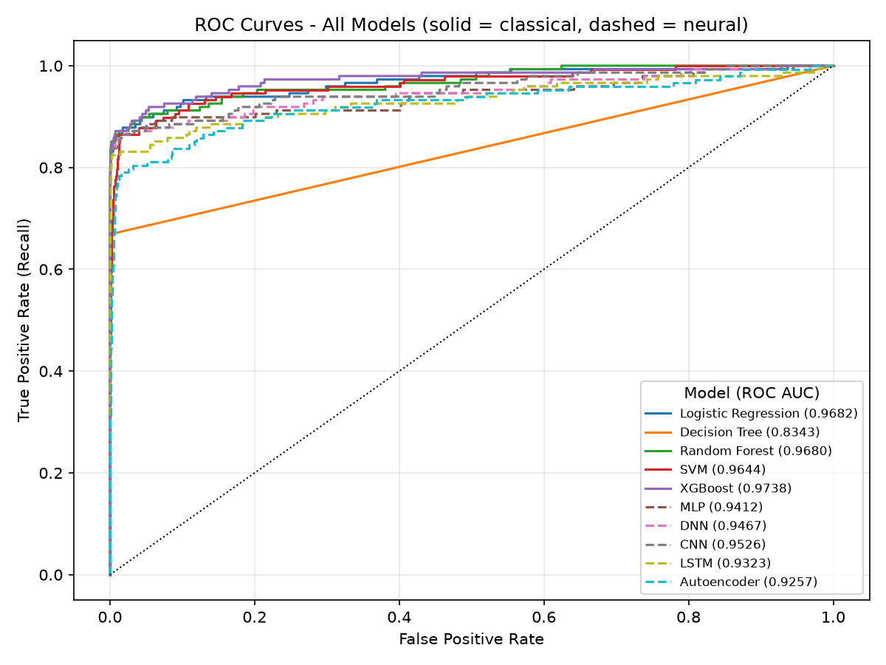
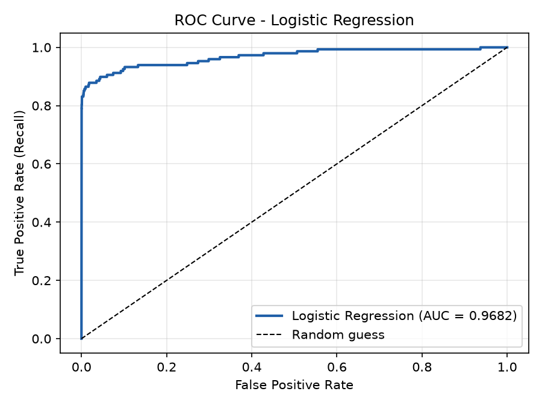
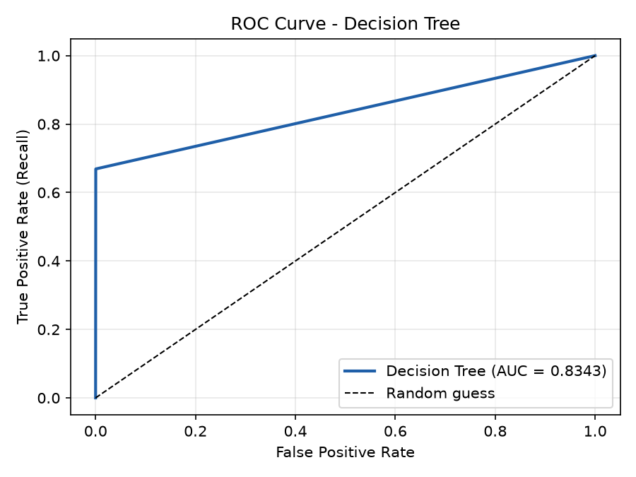
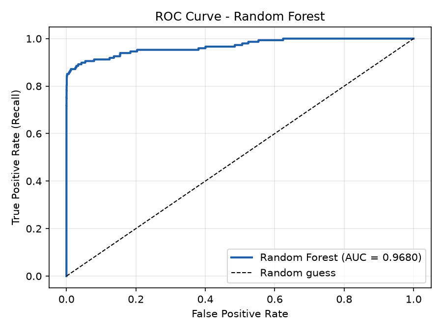
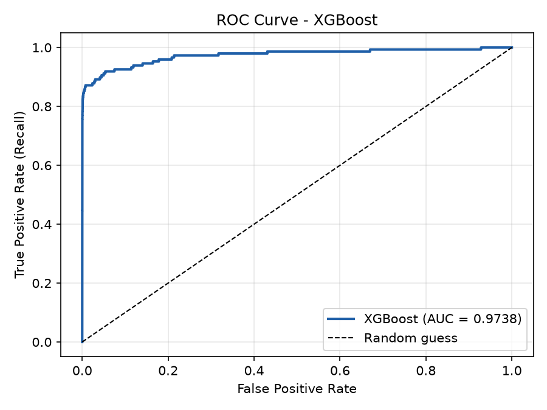
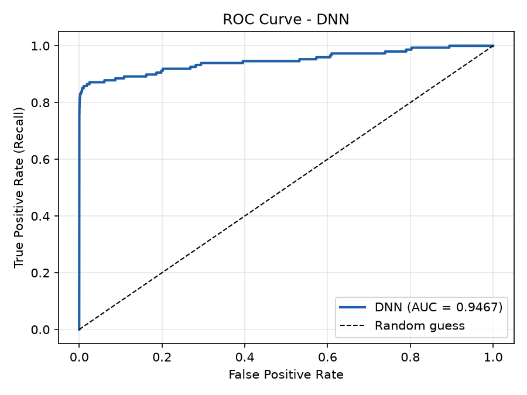
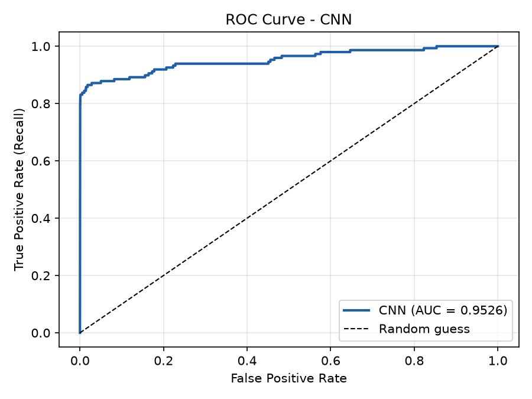
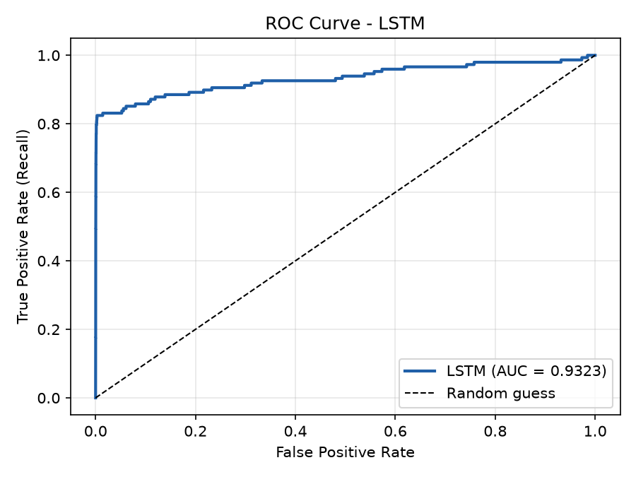
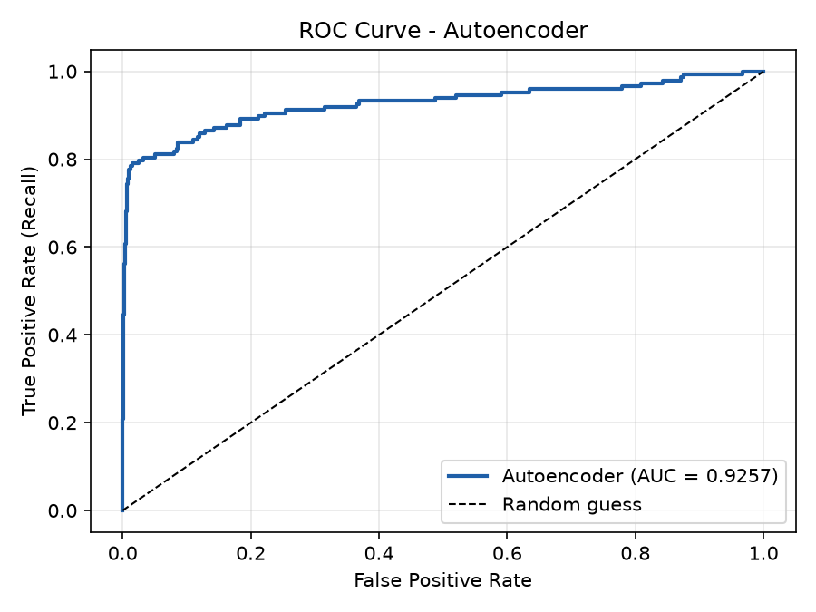

Name: Keith Rodrigues
Email: kar396@scarletmail.rutgers.edu
Contribution to the Group Report:
For this project, I was responsible for the full implementation, evaluation, and comparative analysis of both classical machine learning models and modern neural networks for credit card fraud detection. Specifically, I:
What I Learned from This Project:
This project deepened my understanding of real-world machine learning workflows, particularly the challenges of imbalanced data in fraud detection. I learned how:
Overall, this experience enhanced my practical skills in end-to-end machine learning, model evaluation, and technical communication.
Abstract—This project compares classical machine learning algorithms with modern neural network architectures for credit card fraud detection. Using a highly imbalanced, anonymized dataset of 284,807 transactions (0.17% fraud), I implemented five models from each paradigm and evaluated all ten on the same held-out test set of 85,443 transactions. Unlike many studies, this work preserves the original class imbalance (no oversampling or undersampling) and handles it with class weighting instead. It also includes an unsupervised autoencoder trained only on legitimate transactions, showing what is achievable when fraud labels are unavailable. Models were assessed with accuracy, precision, recall, F1-score, ROC AUC and precision–recall AUC. The classical ensembles performed best overall: XGBoost achieved the highest ROC AUC ({{xgboost.roc_auc}}) and Random Forest the highest F1-score ({{random_forest.f1}}) and PR AUC ({{random_forest.pr_auc}}). The neural networks caught a similar share of fraud (recall {{lstm.recall:pct}}–{{dnn.recall:pct}}) but with far more false alarms and lower ROC AUC ({{lstm.roc_auc}}–{{cnn.roc_auc}}), while training 20 to 160 times longer than XGBoost. The study concludes that, on structured tabular data of this kind, well-configured classical ensembles are the stronger and more practical choice.
Credit card fraud continues to be a major threat in global finance, as attackers employ increasingly sophisticated tactics to evade detection. Detecting fraud reliably is challenging because fraudulent transactions are extremely rare in real-world data, making up less than 1% of all transactions.
This study compares two major categories of machine learning models—classical algorithms and modern neural networks—for their effectiveness in detecting credit card fraud. Classical models rely on statistical principles or tree-based rules, while neural networks use multiple layers of computation to learn complex, non-linear patterns. A total of ten models were implemented:
The dataset, sourced from Kaggle, contains 284,807 anonymized credit card transactions, of which only 0.17% are fraudulent. To reflect real-world conditions, no resampling was used. Instead, imbalance was handled with class weights, and all models were evaluated on one shared, stratified test set (30% of the data). Classical models trained on the remaining 70%; neural networks split it into 40% training and 30% validation, with the validation set used for early stopping. All randomness is seeded, so the entire study can be reproduced with a single command.
Key findings:
Credit card fraud imposes significant financial and reputational costs on both consumers and financial institutions. With the increasing digitization of payments and the rise in online transactions, fraudsters are adopting more sophisticated tactics to evade detection. As a result, developing intelligent, data-driven fraud detection systems has become a top priority in financial technology.
This study evaluates and compares two major machine learning paradigms—classical algorithms and modern neural networks—in their ability to detect fraudulent transactions. Classical models rely on well-defined statistical principles or decision-tree rules. Neural networks are multi-layered computational systems that learn patterns from data through interconnected processing units. The two paradigms offer distinct trade-offs in performance, training cost, and interpretability.
One of the central challenges in fraud detection is the extreme rarity of fraud. This class imbalance means a model can achieve very high overall accuracy simply by favoring the majority class while still missing most fraud. For example, a false negative—a fraudulent transaction classified as legitimate—could let a $500 charge slip through undetected, causing losses for both the cardholder and the issuing bank. Recall, the share of actual fraud that is caught, is therefore a critical metric. At the same time, every false positive is a legitimate customer whose card is blocked or questioned, so precision matters too.
To simulate real deployment conditions, this project deliberately avoids resampling techniques such as oversampling (creating synthetic fraud examples) or undersampling (discarding legitimate ones). All models are trained and tested on the dataset’s original distribution.
Another key consideration is interpretability. In finance, institutions must often justify why a transaction was flagged. Classical models such as Logistic Regression and Decision Trees provide clear decision pathways, whereas deep networks such as LSTMs and CNNs are much harder to explain.
The primary objectives of this study are:
The dataset is the widely used Credit Card Fraud Detection dataset available on Kaggle, released by the Machine Learning Group of the Université Libre de Bruxelles [3]. It contains transactions made by European cardholders over two days in September 2013: 284,807 transactions in total, of which 492 (0.17%) are fraudulent.
All 30 input features are numerical, so no categorical encoding was needed.
With only 492 fraud cases among nearly 285,000 transactions, the dataset reflects the core difficulty of real fraud detection: fraud is rare but costly. Learning from very few positive examples without simply predicting “legitimate” every time is the central challenge of this project.
A limitation is that PCA hides the original feature meanings, which restricts interpretation at the level of individual features.
All ten models share one preprocessing pipeline (common.py), so every model sees exactly the same data.
Every split is stratified, so each subset keeps the 0.17% fraud rate, and uses a fixed random seed.
All 30 features were standardized with scikit-learn’s StandardScaler (mean 0, standard deviation 1). The scaler is fitted on the training set only and then applied to the validation and test sets, so no information from the evaluation data leaks into training. Scaling is especially important for gradient-based models such as logistic regression and neural networks.
No oversampling or undersampling was performed. Instead, imbalance was handled by weighting the classes during training:
class_weight='balanced', which weights each class inversely to its frequency.scale_pos_weight equal to the ratio of legitimate to fraudulent training transactions (about 578).In each weighted model, one missed fraud counts roughly as much as 578 misclassified legitimate transactions during training.
Logistic Regression: A linear classifier using the logistic sigmoid function, trained with balanced class weights and no regularization.
Decision Tree: A tree trained with the Gini impurity criterion and balanced class weights. The maximum depth was tuned by 3-fold stratified cross-validation on the training set over {4, 6, 8, 10, 12, unlimited}, scored by F1. Unlimited depth scored best.
Random Forest: An ensemble of 50 decision trees built with bootstrap aggregation (bagging), with a maximum depth of 10 to balance generalization and model complexity.
Support Vector Machine (SVM): An SVM with a radial basis function (RBF) kernel and balanced class weights. Its decision-function score is used for the ROC curve. This gives the same ranking, and therefore the same ROC AUC, as Platt-scaled probabilities, without the five additional fits those require.
XGBoost: A gradient-boosted tree ensemble with 100 estimators, maximum depth 3, and a learning rate of 0.1, with scale_pos_weight set as described above.
All neural networks were implemented in TensorFlow/Keras and share one training recipe (Section VI-C).
Multilayer Perceptron (MLP): A shallow network with one hidden layer of 64 ReLU neurons and a sigmoid output, serving as a lightweight neural baseline.
Deep Neural Network (DNN): A fully connected network with three hidden layers (128, 64, and 32 ReLU neurons), each followed by dropout of 0.2 for regularization, and a sigmoid output.
Convolutional Neural Network (CNN): A 1D CNN that tests whether local interactions between neighboring features help on tabular data. The 30 features are reshaped into a 6 × 5 grid. One convolutional layer (32 filters, kernel size 3) is followed by max pooling, flattening, a 32-unit dense layer with dropout of 0.3, and a sigmoid output.
Long Short-Term Memory (LSTM): The data has no true time order, so the LSTM treats the 30 features as 30 time steps of one value each, to test whether a recurrent model can find latent correlations. One LSTM layer (32 units) is followed by dropout of 0.2, a 16-unit dense layer, and a sigmoid output.
Autoencoder: An unsupervised network trained only on legitimate transactions to reconstruct its input. It compresses the 30 features to an 8-dimensional representation (30 → 16 → 8) and reconstructs them with a mirrored decoder (8 → 16 → 30), using ReLU hidden layers, a linear output, mean squared error loss, and the Adam optimizer. A transaction is flagged as fraud when its reconstruction error exceeds the 95th percentile of reconstruction errors on the training data (threshold {{autoencoder.threshold}}).
| Path | Contents |
|---|---|
common.py | Shared data loading, splitting, scaling, training recipe, metrics and plotting |
classical_models/ | One script per classical model (e.g., xgboost_model.py) |
neural_networks/ | One script per neural model (e.g., lstm_model.py) |
run_all.py | Runs all ten models and builds the combined results table and ROC chart |
data/creditcard.csv | The dataset (downloaded separately from Kaggle) |
results/ | Metrics for every model (metrics.csv and one JSON file per model) |
images/ | ROC curves, confusion matrices, and the combined ROC comparison |
report/ | The source of this report and the script that builds it from results/metrics.csv |
Each model script can also be run on its own, for example python classical_models/xgboost_model.py.
Exact library versions are pinned in requirements.txt.
All random number generators (Python, NumPy, and TensorFlow) are seeded, and TensorFlow’s deterministic operations are enabled, so re-running the project produces identical results. The complete study runs with one command, python run_all.py, which took about 15 minutes on a laptop CPU. Every number in this report is read from the resulting results/metrics.csv.
Several metrics were used together because of the severe class imbalance. Each is computed on the shared test set, with fraud as the positive class.
Each model’s predictions are summarized by four counts: True Positives (TP), frauds correctly flagged; True Negatives (TN), legitimate transactions correctly passed; False Positives (FP), legitimate transactions wrongly flagged; and False Negatives (FN), frauds missed. All other metrics are derived from these.
Accuracy = TP + TNTP + TN + FP + FN
Accuracy is misleading here: a model that labels every transaction legitimate would score 99.83%.
Precision = TPTP + FP Recall = TPTP + FN
Precision is the share of flagged transactions that are truly fraud; low precision means many false alarms. Recall is the share of actual fraud that is caught; low recall means missed fraud.
F1 = 2 × Precision × RecallPrecision + Recall
The harmonic mean of precision and recall; it is high only when both are high.
The ROC curve plots the true positive rate against the false positive rate at every possible decision threshold. The area under it (ROC AUC) is the probability that the model scores a randomly chosen fraud higher than a randomly chosen legitimate transaction. It measures ranking quality independently of any single threshold.
The area under the precision–recall curve. Because there are so many legitimate transactions, even a small false positive rate can mean thousands of false alarms, which ROC AUC barely penalizes. PR AUC is far more sensitive to this, making it the most informative single threshold-free metric for highly imbalanced problems. A random model would score about 0.0017.
Table I reports every metric on the shared test set of 85,443 transactions (148 fraud). The best value for each metric is shown in bold.
TABLE I: Performance comparison of all models on the shared test set
{{RESULTS_TABLE}}TABLE II: Confusion-matrix counts on the test set (85,295 legitimate, 148 fraud)
{{CONFUSION_TABLE}}From the tables:
Accuracy ranges from {{autoencoder.accuracy}} to {{random_forest.accuracy}} and says little: the Autoencoder’s 94.9% accuracy hides more than 4,000 false alarms.
Fig. 1 overlays the ROC curves of all ten models. Each model’s individual ROC curve follows in Figs. 2–11, with its AUC in the legend. All figures are generated and saved automatically by the code.

Fig. 1: ROC curves of all ten models (solid = classical, dashed = neural).

Fig. 2: Logistic Regression (AUC = {{logistic_regression.roc_auc}})

Fig. 3: Decision Tree (AUC = {{decision_tree.roc_auc}})

Fig. 4: Random Forest (AUC = {{random_forest.roc_auc}})
Fig. 5: SVM (AUC = {{svm.roc_auc}})

Fig. 6: XGBoost (AUC = {{xgboost.roc_auc}})
Fig. 7: MLP (AUC = {{mlp.roc_auc}})

Fig. 8: DNN (AUC = {{dnn.roc_auc}})

Fig. 9: CNN (AUC = {{cnn.roc_auc}})

Fig. 10: LSTM (AUC = {{lstm.roc_auc}})

Fig. 11: Autoencoder (AUC = {{autoencoder.roc_auc}})
Observations:
Confusion-matrix plots for every model are saved in images/confusion_matrices/.
Class weighting tells every supervised model that missing one fraud costs as much as roughly 578 false alarms. At the default 0.5 threshold this pushes most models toward high recall and low precision, which is why Logistic Regression and all the neural networks flag over a thousand legitimate transactions each. The tree-based models were affected least: the Decision Tree and Random Forest raised fewer than 50 false alarms each, and XGBoost {{xgboost.fp:int}}.
This shows that precision and recall at a single threshold depend as much on the weighting and threshold as on the model. The threshold-free metrics are a fairer comparison of the models themselves. Logistic Regression, for example, has a respectable PR AUC ({{logistic_regression.pr_auc}}) despite its 6.7% precision at threshold 0.5, meaning a higher threshold would trade some recall for far fewer false alarms. In deployment, the threshold should be chosen on validation data to match the institution’s cost of a missed fraud versus a false alarm.
Neural approaches would become more attractive with richer inputs, such as raw transaction histories per cardholder, where sequence models can learn behavioral patterns that tabular features cannot express.
Because the best-performing models here are also among the more explainable, this study found no trade-off between accuracy and interpretability on this dataset.
Achieved. Ten models—five classical and five neural—were implemented and evaluated on the same held-out test set, using both quantitative metrics and ROC curves.
Achieved. No oversampling or undersampling was used. Imbalance was handled through class weighting, and the Autoencoder was trained only on legitimate transactions, in line with standard anomaly detection practice.
Achieved. Every model was assessed with accuracy, precision, recall, F1-score, ROC AUC, and PR AUC, along with a confusion matrix and ROC curve.
Achieved. The discussion contrasts interpretable models with black-box networks and finds that, on this dataset, the most accurate models are also reasonably explainable.
This study compared five classical machine learning models and five neural networks for credit card fraud detection, using a real, highly imbalanced dataset without any resampling and a single shared test set.
Final Thought: More complex models are not automatically better. On structured tabular data, well-configured classical ensembles delivered the best detection, the lowest cost, and the most explainable decisions, while neural approaches are best reserved for richer data or for settings without labels.
This project draws on prior work to ground its approach.
Bhattacharyya et al. (2011) [1] conducted one of the earliest large-scale comparisons of machine learning methods for credit card fraud detection, evaluating logistic regression, support vector machines, and random forests on real transaction data. They found that random forests performed best overall and that logistic regression remained competitive. This supports including classical baselines and is consistent with this study’s finding that tree ensembles lead on tabular fraud data.
Dal Pozzolo et al. (2018) [2] argued that fraud detection systems must be evaluated under realistic conditions, accounting for the extreme class imbalance and for the limited number of alerts investigators can review. They recommend precision-focused measures over accuracy. This aligns with this project’s decisions to keep the natural class distribution and to report precision, the number of false alarms, and PR AUC alongside ROC AUC.
By building on these works, this project extends the comparison to modern neural architectures and an unsupervised autoencoder, evaluated under the same realistic conditions.
[1] S. Bhattacharyya, S. Jha, K. Tharakunnel, and J. C. Westland, “Data mining for credit card fraud: A comparative study,” Decision Support Systems, vol. 50, no. 3, pp. 602–613, 2011. https://doi.org/10.1016/j.dss.2010.08.008
[2] A. Dal Pozzolo, G. Boracchi, O. Caelen, C. Alippi, and G. Bontempi, “Credit card fraud detection: A realistic modeling and a novel learning strategy,” IEEE Transactions on Neural Networks and Learning Systems, vol. 29, no. 8, pp. 3784–3797, 2018. https://doi.org/10.1109/TNNLS.2017.2736643
[3] Machine Learning Group – ULB, “Credit Card Fraud Detection,” Kaggle. https://www.kaggle.com/datasets/mlg-ulb/creditcardfraud
[4] scikit-learn User Guide. https://scikit-learn.org/stable/user_guide.html
[5] XGBoost Documentation. https://xgboost.readthedocs.io/en/stable/
[6] TensorFlow Keras Guide. https://www.tensorflow.org/guide/keras